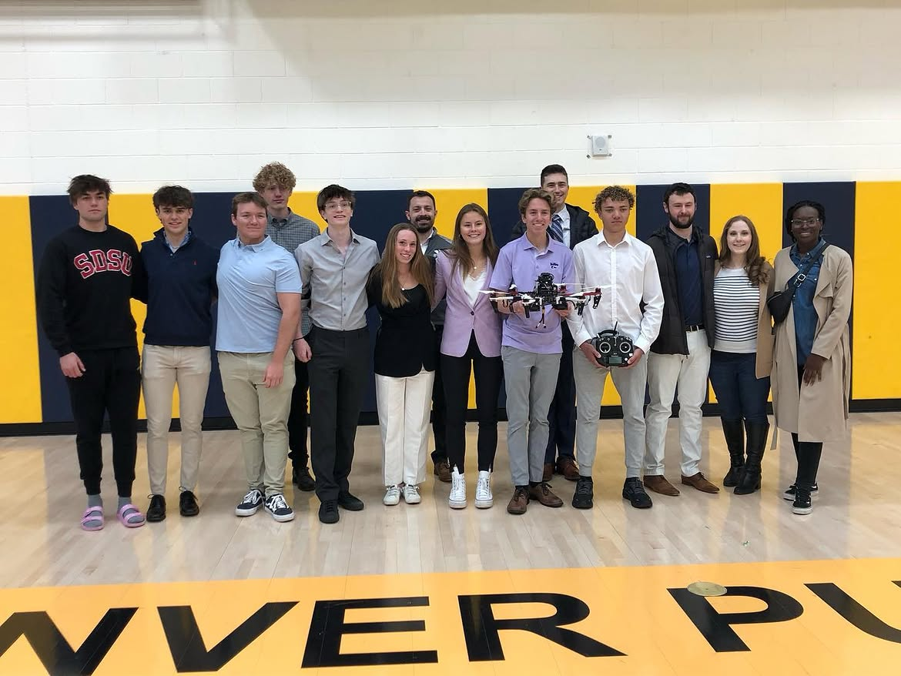
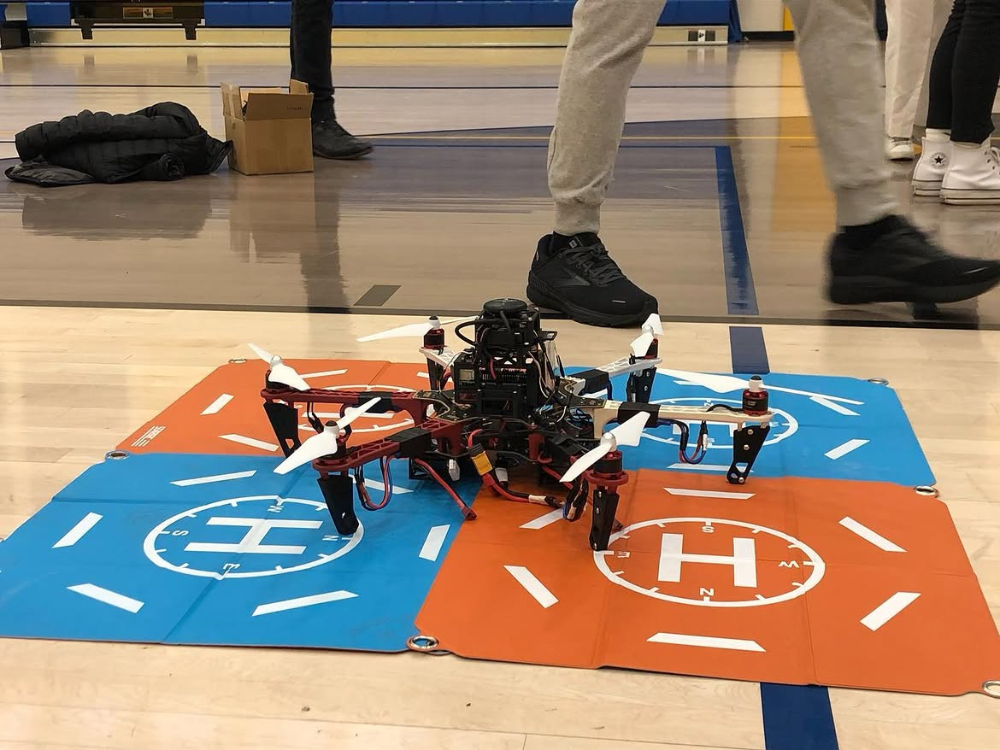
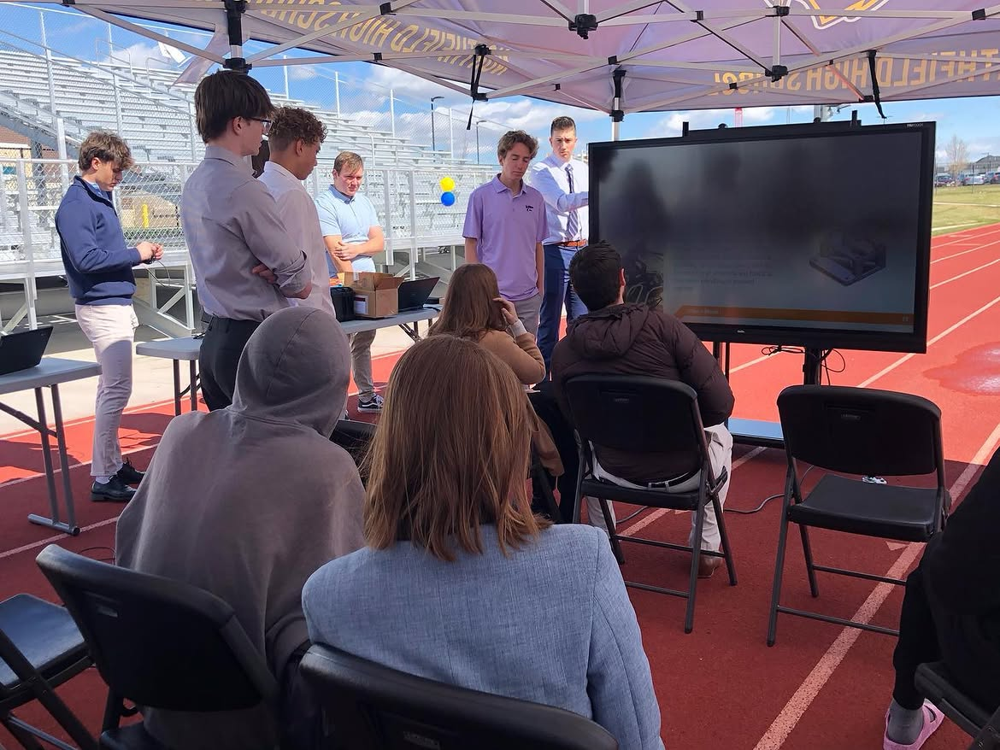
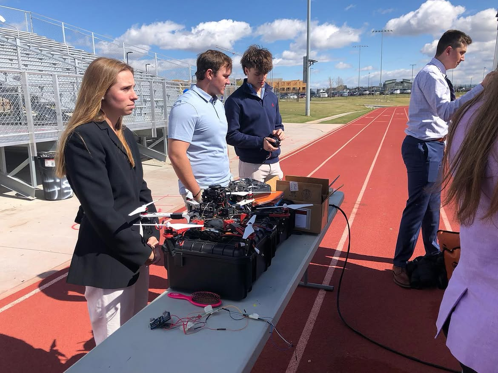
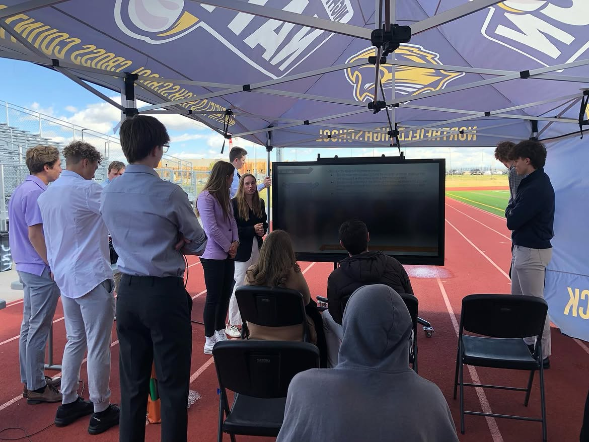
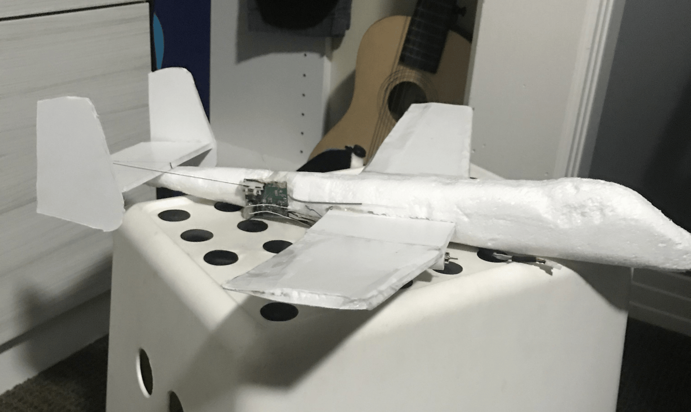
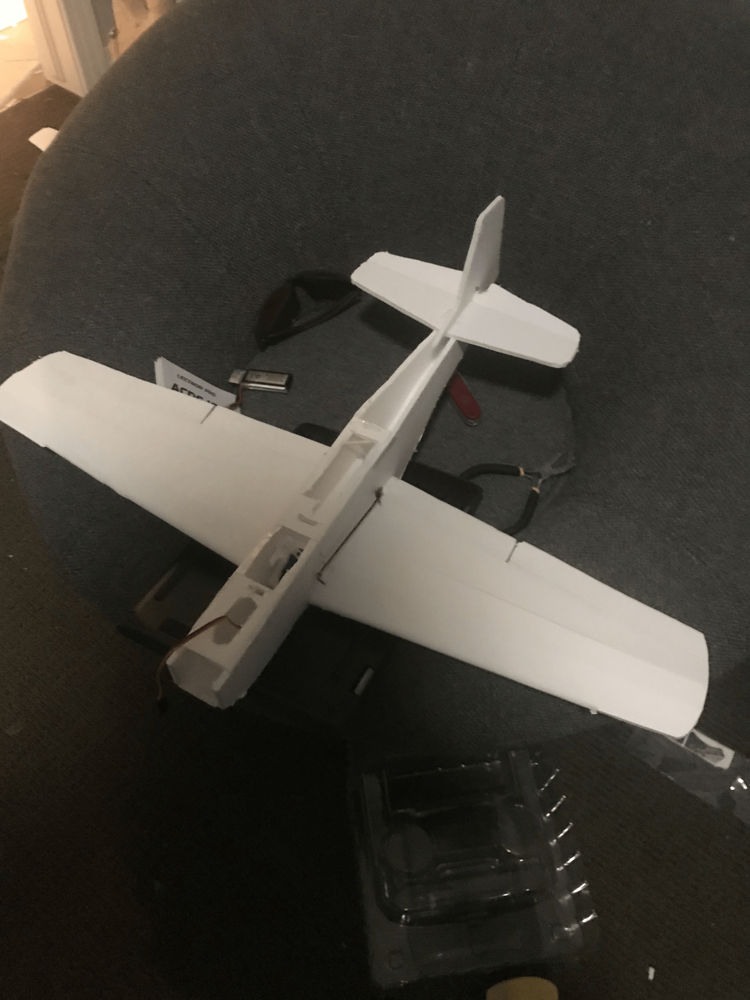
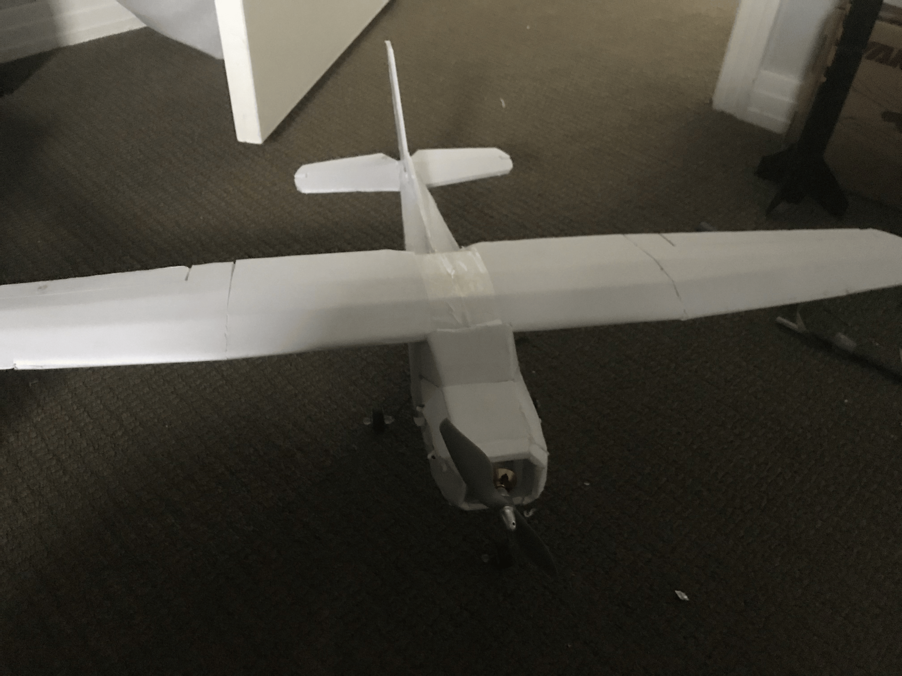

PROJECT DEEP-DIVE
A year-long LIDAR-mapping hexacopter built in partnership with Lockheed Martin, followed by a scratch-built fixed-wing autopilot aircraft, designed and flown on my own.
For a full year, my Robotics II class partnered directly with Lockheed Martin engineers — biweekly Zoom check-ins throughout the year and a final in-person presentation — to design and build a hexacopter equipped with our own LIDAR system for terrain mapping and object detection/avoidance. My contribution was the onboard software: running Linux on a Raspberry Pi to interface with a Slamtec RPLIDAR, a low-cost 360° 2D laser scanner, to generate real-time terrain maps in flight.





Taking what I'd learned outside of class, I built my own fixed-wing UAV at home — cutting the airframe from foamboard using free plans found online, sourcing the electronics independently, and integrating autopilot functionality using what I'd picked up from the Lockheed Martin program. Went through several prototype generations before the final build flew clean.
The autopilot was ArduPilot running on a Pixhawk, wired inline between the RC receiver and the servos so every stick input passed through the flight controller first. In Manual mode the Pixhawk just forwarded my inputs and the plane flew like any other RC aircraft; switching to an assisted mode — FBWA, RTL, or Auto — stopped the pass-through and handed control to the Pixhawk, which flew the plane itself off its own IMU and GPS. Full manual control when I wanted it, full autopilot when I switched modes.



FINALFlight test — final build